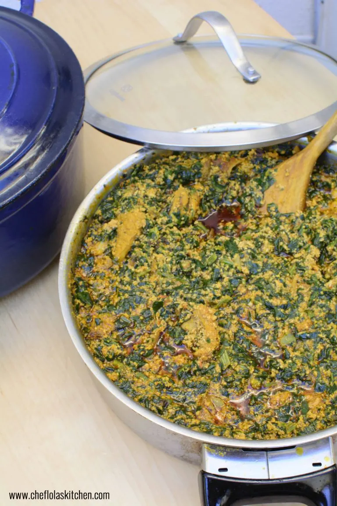

Egusi

Description
This recipe is to make the delicious egusi soup
Ingredients
- 3/4 cup pumpkin seeds
- 11/2 pounds cubed beef stew meat
- 1/2 cup peanut oil
- 2 large tomatoes, chopped
- 1 small onion, chopped
- 2 habanero peppers
- 1 1/2 cups water
- 1 pound chopped spinach
Steps
- blend pumpking seeds
- heat oil and add seasoned beef
- blend tomatoes, onions and peppers and add to meat, reduce heat to medium and cook for 40 mins
- add water and simmer for 10 minutes
- add spinach and ground pumpkin seeds and simmer for 10 more minutes